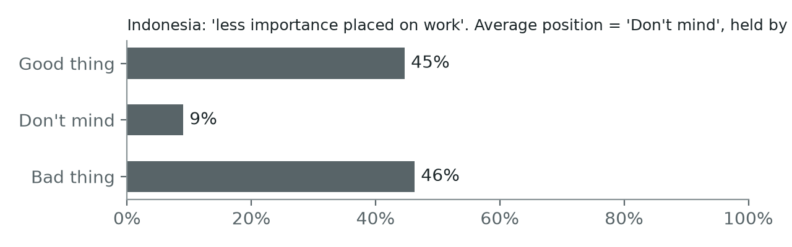
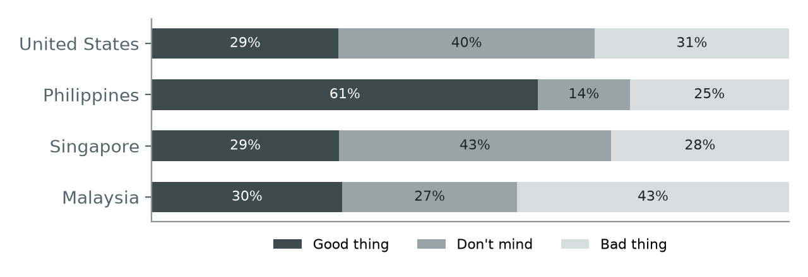
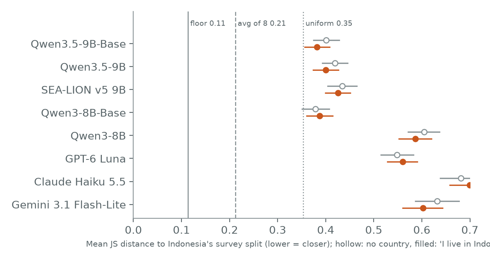
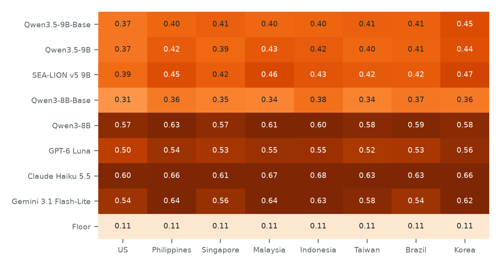

← Research·Experiments··Updated
What is pluralistic alignment? Eight models against eight countries' survey answers
Pluralistic alignment asks how a model should answer when people disagree. This note walks through its three kinds with real survey answers, and measures eight 2026 models against eight countries on 181 World Values Survey questions: every model sits farther from people than a uniform guess, five of six chat models answer far more narrowly than people, and “I live in <country>.” barely moves them.
Summary: the short answer and the key results
In short
What is pluralistic alignment, and where do 2026 models sit?
Pluralistic alignment is the study of how a model should answer when people disagree. A Roadmap to Pluralistic Alignment (ICML 2024) names three kinds: Overton (lay out the reasonable answers), steerable (take a perspective when asked) and distributional (answer in a population's proportions). Asked 181 World Values Survey questions 50 times each, eight 2026 models sit 0.35 to 0.64 (Jensen-Shannon distance) from the answers of eight countries' people, where a perfect sampler scores 0.11 and a uniform guess 0.34; none beats the uniform guess for any country. Five of six chat models answer far more narrowly than people, “I live in <country>.” moves them by about 0.02 at most, and two API models decline about half the questions.
Key results
| What we measured | Result | Compared with |
|---|---|---|
| How far are models from each country's answers (distributional)? | 0.35 (Qwen3-8B-Base) to 0.64 (Claude Haiku 5.5), averaged over 8 countries; in 60 of 64 model-country pairs farther than a uniform guess, never closer with the interval clear of it | Floor (perfect sampler, 50 answers) 0.11; average of 8 countries 0.20; uniform guess 0.34 |
| How spread out are the answers? | Chat models 0.05 (Gemini 3.1 Flash-Lite) to 0.64 (Qwen3.5-9B); 5 of 6 below people by more than 0.15. The model's most common answer is held by 35-42% of a country | People 0.76; a country's own most common answer is held by 53% |
| Does post-training narrow answers? | Qwen3-8B: spread 0.73 → 0.19 (−0.53 [−0.57, −0.49]). Qwen3.5-9B: 0.69 → 0.64 (−0.05 [−0.08, −0.02]) | The same model before post-training, same questions |
| Does “I live in <country>.” steer toward that country? | Open models −0.016 to −0.018 (intervals below 0, except Qwen3-8B-Base); API models not detectable (GPT-6 Luna +0.003 [−0.012, +0.019]); 0.003-0.009 more toward the named country than the other seven | No country in the prompt, paired by question |
| Is the Southeast Asian model closer to Southeast Asia? | No: SEA-LION v5 is 0.025 [0.013, 0.037] farther than Qwen3.5-9B from the Philippines, Singapore, Malaysia and Indonesia, and narrower (spread −0.08) | Qwen3.5-9B, the model it was post-trained from |
| How often do models decline to pick (Overton-style)? | With no country in the prompt, Claude Haiku 5.5 named an option in 51% of replies, Gemini 3.1 Flash-Lite in 48%, GPT-6 Luna in 99.9%, the open chat models in 93-99% (over all nine prompts: 55%, 49%, 99.5%) | The same prompt and 32-token budget for every model |
01Introduction
Ask a friend this, and then ask a second friend:
“Your team lead asks you to come in this weekend to finish a project. You already have personal plans. How would you respond?”
The two answers will probably differ, and neither friend is wrong. One goes in and asks for a day off later. One keeps the plans and offers a few hours from home. One says no and explains why. Which answer you give depends on what you value: loyalty to the team, a promise to your family, a rule that work stays at work. Now ask a language model. It gives one answer, often the same one every time, to millions of people at once. Pluralistic alignment is the research that asks what a model should do with a question like this, where people disagree and are entitled to.
What is known. A line of papers has built the area: values conflict and models tend to average them away (Value Kaleidoscope); there are three distinct things “pluralistic” can mean (A Roadmap to Pluralistic Alignment); one large model can be paired with small community models to cover groups it misses (Modular Pluralism); models repeat themselves and each other on open questions (Artificial Hivemind); and ordinary post-training makes models harder to steer and narrower in what they say (Spectrum Tuning).
What is missing. The definitions are easy to state and hard to picture. Most explainers use invented examples, and the measurements in the papers use models from 2023-2025 and countries chosen for other questions.
What do Overton, steerable and distributional pluralism look like with real survey answers, and where do 2026 models sit against them?
What this note does. It follows the papers in the Roadmap's order and takes no side on which kind of pluralism a model should have. Every figure is backed by one experiment: eight models answer 181 World Values Survey questions 50 times each, with and without “I live in <country>.”, and their answers are compared with how people in eight countries actually answered. It contributes:
- a plain-language walk through the three kinds of pluralism, each tied to a real example;
- a measurement on eight 2026 models against eight countries (the US, five in Southeast and East Asia, Brazil and South Korea), with a sampling floor, the spread of answers beside every distance, and intervals;
- an interactive explorer of every question, country, model and prompt behind the numbers;
- the code and every reply, which the next episodes reuse to measure what post-training does to plurality.
What counts as a result. Written down before the main run (plan and predictions): a distance only counts beside the floor a perfect sampler of that country would score with the same 50 answers, beside cheap answerers (a uniform guess, the average of the eight countries, the nearest other country), and beside the spread of the model's answers, so that “close” cannot come from naming only the most popular answer.
02Three kinds of pluralism, with real answers
2.1 The problem: one answer averages people away
Value Kaleidoscope starts from value pluralism, the view that several values can be right and still pull against each other, like honesty and kindness when a friend asks about a bad haircut. Its authors argue that a model trained to give the single most likely answer tends to average such conflicts away. The paper's response is a dataset (ValuePrism: 218,000 values, rights and duties across 31,000 situations) and a small model, Kaleido, that lists the values in play instead of choosing one.
Survey data shows what averaging costs. The World Values Survey asked people whether “less importance placed on work in our lives” would be a good thing, a bad thing, or something they don't mind. Figure 1 opens on Indonesia: 44% said good, 46% said bad, and 9% said they don't mind (45/9/46 once the few “don't know” answers are set aside). The average position on that scale lands on “don't mind”, the one answer almost nobody gave. A model that answers with the average would speak for 9% of Indonesians.

2.2 Overton pluralism: show the range of reasonable answers
The Roadmap names three ways a model can be pluralistic. The first is named after the Overton window, the range of positions a society treats as reasonable. An Overton-pluralistic model answers a question like the weekend dilemma by laying out the reasonable responses (go in and ask for time back; keep the plans; offer part of the weekend; ask whether the deadline can move) instead of picking one. It suits questions where there is no single right answer and the user is better served by seeing the options.
In this experiment it shows up as refusal to pick: several models, asked for a single letter on a contested question, instead wrote that the question has many perspectives. That is a reasonable Overton behaviour in a chat, and an invalid answer to a survey. Section 5 counts it.
2.3 Steerable pluralism: take a perspective when asked
A steerably pluralistic model can be told whose perspective to take and then takes it faithfully: “answer as a manager in a family business”, “I live in Indonesia”. It suits products used by one community, or users who know what frame they want. Here the steer is the one-line prompt “I live in <country>.” A model is steerable on a question if that line moves its answers toward that country's, and specific if it moves them toward that country more than toward the other seven.
2.4 Distributional pluralism: answer like the population, not like its average
A distributionally pluralistic model, asked the same question many times, gives answers in the same proportions as a target population. If 45% of Indonesians say good and 46% say bad, so does the model across its samples. It suits simulation and polling-style uses, where the spread itself is the point. It is measured here by the Jensen-Shannon distance between the model's 50 answers and a country's split (0 when the proportions match, 1 when they share no answer), always shown beside the spread of the model's answers.
Two facts about real populations make this hard, and Figure 2 shows both on the same question. Groups differ: 61% of Filipinos call less importance on work a good thing, against 30% of Malaysians, who lean the other way (43% bad). Groups are not uniform: the US and Singapore have almost the same split (29/40/31 and 29/43/28), and each is spread across all three answers. Steering a model to “a Singaporean” and getting one answer back would match no Singaporean majority; matching Singapore means matching the spread.

2.5 How each kind is measured
The Roadmap pairs the three kinds with three kinds of benchmark: multi-objective benchmarks, which score a model on several values at once without collapsing them into one number; trade-off steerable benchmarks, which test whether a model can be moved along the trade-offs between those values; and jury-pluralistic benchmarks, which score a model by a jury of people (or models standing in for them) rather than one judge. Spectrum Tuning later named three measures that this series reuses: coverage (how many of the valid answers a model produces), steerability (how well it moves to a perspective or distribution given in context), and distributional alignment (how close its answers are to a population's). This note measures the last two directly, and the first only as the spread of answers.
| Kind | The model should… | Fits | Measured here by |
|---|---|---|---|
| Overton | lay out the reasonable answers | advice, contested questions | refusals to pick one letter (counted, not scored) |
| Steerable | take a perspective when asked | a community's own tool, role-play | change in distance after “I live in <country>.” |
| Distributional | answer in a population's proportions | simulation, surveys | JS distance to the country's split, beside spread |
2.6 Two warnings from the papers
The Roadmap argues that current alignment methods may be limited for pluralistic AI, and cites evidence that standard alignment procedures can reduce distributional pluralism. Artificial Hivemind adds a second warning on open-ended prompts (26,000 real user questions, each rated by 25 people): a single model repeats itself, different models converge on strikingly similar answers, and reward models and model judges match people worst exactly where people disagree with each other. Section 5.3 tests the first warning on matched base and post-trained models; Episode 2 tests the second.
2.7 Approaches the group has proposed
Three responses run through the papers. Kaleido spells out the values in a situation so that a model or person can weigh them. Modular Pluralism keeps a large model and adds small “community models”, each trained on one group's text; the large model draws on them for Overton, steerable or distributional answers, and a missing group is covered by adding its model. Spectrum Tuning post-trains a model on many tasks that each come with a distribution of valid answers, and reports better steerability, coverage and distributional alignment than ordinary instruction tuning. This note tests none of these methods; it measures the starting point they aim to improve.
03Setup
| Part | What it is | Size |
|---|---|---|
| Questions | World Values Survey items in GlobalOpinionQA (Anthropic/llm_global_opinions) with a split for all eight countries. The dataset's WVS items come from Wave 7 (2017-2022), which all eight countries took part in (fieldwork 2017-2020), so every split answers the same master questionnaire. Taiwan is keyed “Taiwan ROC”. File: data/questions.json | 207 found, 181 kept |
| Comparability filter | “Don't know”, “No answer”, missing and volunteered codes removed and each split renormalised. Dropped: 22 items where some country put more than 25% of answers into those codes (the item was not asked, or not asked the same way, there; mostly immigration and confidence-in-organisation items), 2 knowledge questions, 1 follow-up asked only of some respondents, 1 whose object differs by country (“your continent”). Every drop and its reason: results/question_filter.json | 26 dropped |
| Dev questions | 20 WVS items outside the main set (fewer than eight countries), used only to set the prompt, the token budget and the parser | 20 |
| Conditions | No country in the prompt (default), and “I live in <country>.” as the first line, once per country (told its country) | 9 |
| Open models | Qwen3.5-9B-Base and Qwen3.5-9B; Qwen-SEA-LION-v5-9B (AI Singapore's post-training of Qwen3.5-9B on English and Southeast Asian languages); Qwen3-8B-Base and Qwen3-8B. vLLM 0.25.1 on one L40S each, thinking off | 5 |
| API models | GPT-6 Luna, Claude Haiku 5.5 and Gemini 3.1 Flash-Lite through OpenRouter, reasoning off. These are each provider's low-cost tier, chosen to fit 244,350 calls in a $15 budget (later cut to $10; the run spent $6.46); the flagship models may answer differently | 3 |
| Readout | One for every model: the question, its options as letters, and “Answer with the letter of one option only.”; chat models get it as one user message, base models get the same text followed by “Answer:”. 50 samples per question and condition at temperature 1 (GPT-6 Luna and Claude Haiku 5.5 accept no temperature setting and sample at their fixed default of 1), at most 32 tokens, no system prompt. A reply counts if it opens with a letter or says “the answer is X” | 81,450 replies per model |
Terms. A split is the share of a country's respondents giving each answer. A model's answers on a question are its valid replies out of 50; a reply that names no option is invalid (a refusal, an explanation, an unfinished thought). Distance is the Jensen-Shannon distance (base 2) between a model's answers and a split, averaged over questions: 0 means the same proportions, 1 means no answer in common. The floor is the distance a perfect sampler gets: 50 answers drawn at random from the country's own split, compared with that split (about 0.11 for every country); no model can be expected to beat it. Spread is the entropy of a set of answers divided by its maximum: 0 when every answer is the same, 1 when every option is equally common. A cell (one model, question and condition) enters the distances only with at least 10 valid answers.
Cheap answerers, read out the same way (50 draws, then the distance): a uniform guess (every option equally likely), the average of the eight countries' splits, and the nearest country (the other country whose splits are closest overall, such as Taiwan for the US). A model that knows nothing about a country should still beat the uniform guess if it knows anything about people.
04How the study was run
- Write the plan: questions, conditions, models, the readout, the metrics, a Design section (floor, cheap answerers, boring explanations, the ruler check) and five predictions with numeric thresholds.
- Build the question set and its filter (181 of 207 kept) before any model ran.
- Check the ruler: the parser on 26 written replies with known answers and the distance and spread functions on 6 hand-checkable cases (one against SciPy); all passed.
- Pilot on the 20 dev questions: 3,000 replies per open model, 600 per API model. Two settings came from this: a 32-token budget (at 16 tokens, Claude and Gemini replies were cut off mid-sentence before naming a letter) and the parser's “the answer is X” rule.
- Commit the plan, then run the main set: 181 questions × 9 conditions × 50 samples × 8 models = 651,600 replies.
- Score with the pre-registered metrics and a 95% bootstrap over questions (2,000 resamples, paired where two conditions or models are compared), then read the most common invalid replies of every model for answers the parser missed.
| Fixed before any main-set reply | Changed after reading results |
|---|---|
| Questions and filter, conditions, models, readout, metrics, the 10-valid-answer rule, predictions | The cheap answerers were first scored from their exact splits, which no 50-answer sample can match (the floor itself is 0.11); they are now read out like a model, with 50 draws. The exact versions stay in summary.json |
Conditions: open models on Modal L40S GPUs (three at once, 23 minutes in all); API models through OpenRouter, three processes in parallel, about an hour. Spend: OpenRouter $6.46 (three API models, including the pilot; cap $10) and Modal about $3.50 of logged GPU time (five open models, dev and main runs; cap $30).
05Results
| Model | Valid answers | Questions kept | Spread [95% CI] | Distance, no country | Distance, told its country | Change [95% CI] | People holding its top answer |
|---|---|---|---|---|---|---|---|
| Qwen3.5-9B-Base | 0.85 | 181 | 0.69 [0.66, 0.72] | 0.41 | 0.39 | −0.016 [−0.022, −0.009] | 0.32 |
| Qwen3.5-9B | 0.99 | 181 | 0.64 [0.61, 0.68] | 0.41 | 0.39 | −0.018 [−0.029, −0.007] | 0.35 |
| SEA-LION v5 9B | 0.99 | 181 | 0.57 [0.53, 0.61] | 0.43 | 0.42 | −0.016 [−0.026, −0.006] | 0.35 |
| Qwen3-8B-Base | 0.91 | 181 | 0.73 [0.69, 0.76] | 0.35 | 0.35 | −0.005 [−0.018, +0.008] | 0.37 |
| Qwen3-8B | 0.93 | 172 | 0.19 [0.16, 0.23] | 0.59 | 0.58 | −0.018 [−0.033, −0.002] | 0.36 |
| GPT-6 Luna | 1.00 | 181 | 0.31 [0.26, 0.35] | 0.54 | 0.54 | +0.003 [−0.012, +0.019] | 0.37 |
| Claude Haiku 5.5 | 0.51 | 103 | 0.10 [0.06, 0.14] | 0.64 | 0.65 | −0.018 [−0.044, +0.008] | 0.35 |
| Gemini 3.1 Flash-Lite | 0.48 | 94 | 0.05 [0.03, 0.08] | 0.59 | 0.57 | −0.005 [−0.022, +0.013] | 0.42 |
| People (8 countries) | – | 181 | 0.76 | floor 0.11 | – | – | 0.53 |
| Uniform guess | – | 181 | 1.00 | 0.34 | – | – | – |
| Average of 8 countries | – | 181 | – | 0.20 | – | – | – |
Table 1. Every model against every country, in the default condition unless stated. Valid answers: share of the 9,050 replies with no country in the prompt that named an option. Questions kept: questions with at least 10 valid answers of 50 with no country in the prompt. Spread: mean normalised entropy of a model's answers per question. Distance: mean Jensen-Shannon distance to each country's split, averaged over the eight countries; “told its country” compares “I live in X.” with country X. Change: told minus default, averaged over countries, paired by question, 95% bootstrap over questions. People holding its top answer: the share of a country's respondents who give the model's most common answer, averaged over countries; the People row gives the share holding each country's own most common answer. Floor, uniform and average rows are read out with 50 draws like a model. From results/summary.json.
5.1 No model beats a uniform guess for any country
Across 181 questions, the eight models sit 0.35 to 0.64 from the average country (Table 1). A perfect sampler of each country scores 0.11, the average of the eight countries' splits 0.20, and a uniform guess over the options 0.34. In 60 of the 64 model-country pairs the model is farther from the country than the uniform guess (58 with the whole interval above it); the four exceptions are Qwen3-8B-Base on the US, Singapore, Taiwan and South Korea, whose intervals include the guess. No model is closer than the guess with its interval clear of it. Figure 3 shows Indonesia; the picker shows the other seven, which look the same.
Distance alone hides why. A model can miss a country in two ways: by spreading its answers in the wrong shape, or by putting nearly all of them on one option that only some people chose. The chat models do the second. Their answers have a spread of 0.05 (Gemini) to 0.64 (Qwen3.5-9B) against 0.76 for people, and the answer they give most is held by 35-42% of a country's respondents, against 53% for the country's own most common answer. A uniform guess is wrong about every proportion, but it never puts zero weight on an answer that half a country gave.


Figure 4 shows every model against every country. Every model is closest to the US and farthest from South Korea, Indonesia or the Philippines, except Qwen3-8B (closest to Singapore). That fits GlobalOpinionQA's finding that 2023 models' answers were most like those of the US and some European countries, but the gaps are small (Qwen3.5-9B: US 0.37, South Korea 0.44) beside the gap to people.
5.2 Five of six chat models answer far more narrowly than people
With no country in the prompt, the spread of answers is 0.05 for Gemini 3.1 Flash-Lite, 0.10 for Claude Haiku 5.5, 0.19 for Qwen3-8B, 0.31 for GPT-6 Luna, 0.57 for SEA-LION and 0.64 for Qwen3.5-9B, against 0.76 for people. At temperature 1, Gemini gives the same letter in nearly all of its valid replies to a question. Qwen3-8B, asked the work question with “I live in Indonesia.”, answered “A. Good thing” 50 times out of 50; 45% of Indonesians gave that answer. This is the Roadmap's distributional warning in its plainest form: whatever the model's single answer, it stands in for a split.
Qwen3.5-9B is the exception, and its spread is not all opinion. Its base model answers “A” in 51% of valid replies, against 28.5% of people choosing the first option; the instruct model 33%. Part of what looks like spread in the Qwen3.5 models is a letter habit plus noise, which is why their distance stays at 0.41 despite the spread.
5.3 Post-training narrowed Qwen3-8B sharply and Qwen3.5-9B barely
Against its own base model, Qwen3-8B's spread falls by 0.53 [0.49, 0.57] (0.73 to 0.19) and Qwen3.5-9B's by only 0.05 [0.02, 0.08] (0.69 to 0.64), paired over the same questions. The pre-registered prediction (both above 0.10) missed on Qwen3.5. The direction matches the Roadmap's claim and Spectrum Tuning's finding for both pairs; the size depends on the model family. Distance follows spread: Qwen3-8B moves from 0.35 to 0.59, Qwen3.5-9B stays at 0.41.
5.4 “I live in <country>.” moves open models by 0.02 and the API models not detectably
Telling a model where the user lives lowers its distance to that country by 0.016-0.018 for Qwen3.5-9B-Base, Qwen3.5-9B, SEA-LION and Qwen3-8B (intervals below zero), against a remaining gap of 0.23-0.54 to the floor. Qwen3-8B-Base and the three API models show no change their intervals can separate from zero (GPT-6 Luna +0.003 [−0.012, +0.019]). The move is also barely specific: a steered model ends up 0.003-0.009 closer to the named country than to the other seven on average. In the Roadmap's terms, one line of context makes these models only weakly steerable toward a country's opinions.
The steered condition is where a low distance could come from memory: the World Values Survey publishes its country splits, and a model could have learned “Indonesians say X” without modelling anyone. The spread rules out the strongest form of this here. If a model were reciting the published splits, its answers under “I live in X.” would spread out to match; they do not (Qwen3-8B 0.19 to 0.20, GPT-6 Luna 0.31 to 0.25, Gemini 0.05 to 0.07). A model that has memorised only each country's most common answer would still pass unnoticed by this test.
5.5 The regional model is farther from Southeast Asia, not closer
SEA-LION v5, post-trained from Qwen3.5-9B on English and Southeast Asian languages, sits 0.025 [0.013, 0.037] farther than Qwen3.5-9B from the four Southeast Asian countries (the Philippines, Singapore, Malaysia, Indonesia) with no country in the prompt, and 0.026 [0.015, 0.039] farther when each is named. Its spread is 0.08 lower [0.05, 0.10]. Regional post-training here made the model narrower, as post-training did for Qwen3-8B, and did not move its opinions toward the region. This was the pre-registered prediction least expected to hold (35%), and it missed. The test asks in English; the model's regional training may show more in Malay, Indonesian or Filipino.
5.6 Two API models decline half the questions
With no country in the prompt, Claude Haiku 5.5 named an option in 51% of replies and Gemini 3.1 Flash-Lite in 48%; GPT-6 Luna in 99.9%, the open chat models in 93-99%. The declines are the Overton behaviour of section 2.2, not errors. Claude's most common reply begins “I don't hold personal opinions on contested social questions like this, so…”; Gemini's “As an AI, I do not have personal opinions, political beliefs, or the capacity…”. They cluster on politics, trust and personal-life questions, so Claude keeps 103 questions and Gemini 94 for the distances. On the 69 questions every model answered with no country in the prompt, the ordering of Table 1 holds (open models 0.39-0.44, Qwen3-8B 0.59, GPT-6 Luna 0.53, Claude 0.59, Gemini 0.60).
5.7 What else could explain the numbers
- The parser misses answers. Among replies marked invalid, a pattern search flags those that still name an option; it flags at most 1.5% of all replies for Qwen3-8B-Base and under 0.5% for every other model, and in a read of 30 flagged Qwen3-8B-Base replies about 12 were real answers (“I think the best answer is B.”), so the misses are under 1% of replies, the pre-set bar. File: results/parser_recheck.json.
- Fifty samples are too few. The floor already accounts for this: a perfect sampler with 50 answers scores 0.11, a third of the smallest model distance.
- Refusals leave only easy questions. The common-subset check above keeps the ordering.
- Letter position. The base models' spread is inflated by a habit of answering “A” (section 5.2); their distances are not better for it.
- Steered closeness from memorised splits. Not excluded for the most common answer; the spread shows no recitation of whole splits (section 5.4).
5.8 Predictions, scored
| # | Prediction (before the main run) | Threshold | Confidence | Result | Hit |
|---|---|---|---|---|---|
| P1 | Chat models answer less spread out than people | spread gap < −0.15 for ≥5 of 6 chat models | 75% | 5 of 6 (Qwen3.5-9B −0.12; Gemini −0.72) | hit |
| P2 | Base models spread more than their own post-trained models | > +0.10 for both pairs | 70% | Qwen3-8B +0.53; Qwen3.5-9B +0.05 | miss |
| P3 | “I live in X.” moves API models toward X | < −0.02, CI below 0, ≥2 of 3 | 70% | 0 of 3 (Claude −0.018, CI crosses 0) | miss |
| P4 | No model reaches the sampling floor | > +0.10 above floor, every model and country | 80% | smallest gap +0.19 | hit |
| P5 | The regional model is closer to Southeast Asia | < −0.02, CI below 0 | 35% | +0.025 [+0.013, +0.037] | miss |
Post-mortem. What surprised me: no model beat a uniform guess for any country, and the regional model moved away from its region. What I would change: pre-register the comparison with a uniform guess as a test, since it turned out to be the clearest result, and add a native-language condition for the regional model. Lesson for the design guide: when the measure is a distance to a distribution, put the uniform answerer beside the floor in the plan, read out like the model.
06Plural values, plural models
Two terms, two ideas. “Pluralism” in this series means the research line of the papers above, starting with the Roadmap paper. A different idea goes by a similar name in industry, and the two are easy to blur:
| Pluralistic alignment | Plural intelligence | |
|---|---|---|
| Where the term comes from | A Roadmap to Pluralistic Alignment (ICML 2024) | Noeri (noeri.ai: “The plural of intelligence”) |
| What is plural | the answers and values inside one model | the models: many specialised AIs, each built by a company “from its own data and know-how” |
| The failure it fights | one answer standing in for everyone | one general model standing in for every company's work |
The two meet at scale. A model that gives one homogenised answer to every user becomes, when one model serves every company, one homogenised model. Pluralistic alignment asks for plurality inside a model; plural intelligence asks for it across models.
Why open weights matter. A company can only own, specialise and keep training a model whose weights it can change. That is what the regional model in this note is: AI Singapore post-trained Qwen3.5-9B on English and Southeast Asian languages to make SEA-LION v5. Comparing the two is a small test of whether specialising a model's weights for a region moves its opinions toward that region; section 5.5 gives the answer: on these questions in English, no. SEA-LION is 0.025 farther than Qwen3.5-9B from the four Southeast Asian countries and answers more narrowly. The open question this series takes up next is the reverse: if open models are post-trained on outputs of the same few teacher models, more models need not mean more perspectives. Artificial Hivemind's finding that different models converge is tested on 2026 models in Episode 2.
Who is building the layers. Each line is what the lab says about itself on its own site or launch post.
| Layer | Lab | In its own words |
|---|---|---|
| Open bases | Thinking Machines Lab | Builds AI systems to be “more widely understood, customizable, and generally capable”; its Tinker service is “frontier-grade infrastructure for training your own models” on open-weight models |
| Reflection AI | “We build open models for everyone to access, use, and build on” | |
| Liquid AI | “An efficiency-first foundation model company” that publishes open LFM weights | |
| Open science and recipes | Trillium Labs | “Fostering the open science of frontier AI”, starting with “fully open post-training recipes, including the data, code, evaluations, and intermediate checkpoints” |
| Customise and steer | Goodfire | “An interpretability research lab”, aiming to understand neural networks well enough to design them on purpose |
| Sakana AI | “Building Frontier AI in Japan”, with work on “evolution, collective intelligence, and self-improving systems” | |
| System-level self-improvement | Noeri | “Create the future of many intelligences”: companies build specialised AIs from their own data |
The note describes these bets and does not rank them.
07Implications for AI safety
Distributional pluralism matters wherever a model's answers are read as a sample of people: simulated survey respondents, synthetic users for testing, opinion summaries, or models used as judges and graders of other models. On these 181 questions, every model tested would be a worse stand-in for a country's population than rolling a die over the options, and the most widely deployed kind (post-trained chat models) is also the narrowest. Two consequences follow for anyone training or evaluating models. A judge or reward model built from such a model will score one answer as right where people split, which is the miscalibration Artificial Hivemind reports. And a one-line persona (“I live in…”) is not a fix: it moves these models by a few hundredths on a scale where the gap is several tenths.
Before using a model's answers as a stand-in for a group of people, measure its distance to that group against a uniform guess and a sampling floor, with the spread of its answers beside it.
08What this does not show
- Translation and weighting. GlobalOpinionQA gives one English wording per question; each country answered a translated questionnaire, and the splits are not survey-weighted as far as the dataset paper describes. Wording effects across countries are not checked here.
- English only. Every prompt is in English, including for the Southeast Asian model and for “I live in Indonesia.” A model may answer differently in the country's language.
- Low-cost API tiers. GPT-6 Luna, Claude Haiku 5.5 and Gemini 3.1 Flash-Lite are the cheapest current models of each provider, chosen to fit 244,350 calls in a small budget (spent: $6.46). Their flagship models may answer, decline or spread differently. Two of them accept no temperature setting.
- One readout. A single short-answer prompt, no system prompt, reasoning off, 32 tokens. Reading the answer from the model's option probabilities, or letting it reason first, could give different spreads. The base models' spread is partly a letter habit (section 5.2).
- Refusals change the question set. Claude and Gemini keep 103 and 94 questions; their distances are over those, not all 181. The common-subset check (69 questions) keeps the ordering but is smaller.
- Memorised splits. The World Values Survey publishes country splits; the spread rules out recitation of whole splits under “I live in X.”, not memory of each country's most common answer.
- Survey years. The splits are from 2017-2020 fieldwork; opinions may have moved since.
- Overton pluralism is counted, not scored. A decline is not checked for whether it lays out the reasonable answers.
09Reproduce it
experiments/pluralism-explainer/reproduce.sh --dry-run # every command, in order
python experiments/pluralism-explainer/analyse.py # every number in this note, from the shipped replies
python experiments/pluralism-explainer/recheck_parser.py # the parser re-check on real replies
python experiments/pluralism-explainer/make_figures.py # the static figures, printing what each plotsThe model runs cost about $10 ($6.46 OpenRouter, about $3.50 Modal). Both caps are in the code (plural.API_CAP_USD, modal_sample.MODAL_CAP_USD), and the analysis runs on a laptop in about 30 seconds from the shipped replies.
10What this series tests next
- Episode 2 replicates the two papers behind the warnings: Spectrum Tuning's finding that post-training hurts in-context steerability and coverage, and Artificial Hivemind's findings that models repeat themselves, converge with each other, and are judged worst where people disagree.
- Episode 3 trains Qwen3-8B with RL against a single judge, a jury of perspective-prompted judges and controls, and asks which loses plurality fastest at matched drift, measured with this note's code and questions.
- Episode 4 does the same for a tool-using agent.
11Questions and answers
What is pluralistic alignment?
Research on how an AI system should serve people whose values differ. A Roadmap to Pluralistic Alignment (ICML 2024) names three kinds: Overton (show the range of reasonable answers), steerable (take a given perspective faithfully) and distributional (answer in a population's proportions).
How close are 2026 language models to how countries actually answer survey questions?
Not close. On 181 World Values Survey questions, eight models sat 0.35 to 0.64 (Jensen-Shannon distance) from the answers of the US, the Philippines, Singapore, Malaysia, Indonesia, Taiwan, Brazil and South Korea, against 0.11 for a perfect 50-answer sampler and 0.34 for a uniform guess.
Does telling a model “I live in Indonesia” make it answer like Indonesians?
Barely. The line lowered the distance by about 0.02 for four open models and by nothing detectable for GPT-6 Luna, Claude Haiku 5.5 and Gemini 3.1 Flash-Lite, and it moved models almost as much toward other countries as toward the one named.
Does post-training make answers less diverse?
For Qwen3-8B, sharply: the spread of its answers fell from 0.73 to 0.19 against its base model. For Qwen3.5-9B only slightly (0.69 to 0.64). The direction matches the Roadmap and Spectrum Tuning; the size depends on the model.
What is the difference between pluralistic alignment and plural intelligence?
Pluralistic alignment asks for plural answers and values inside one model. Plural intelligence, Noeri's term, asks for many specialised models owned by the companies that use them. Section 6 compares the two.
AAppendix: data
data/questions.json: the 181 questions.id(GlobalOpinionQA row,goqa-N),question,options(substantive only),human(each country's split over the options, renormalised),missing(each country's share in removed codes).data/dev_questions.json: the 20 dev questions used to set the prompt and parser.results/question_filter.json: every dropped question and the reason.results/samples/main/<model>.jsonl.gz: every reply, one row per question and condition:id,condition(defaultor a country),replies(50 strings, or null for a failed call).results/summary.json: every number in the note. Per model:valid_rate,kept_cells,entropy,jsd,jsd_loose,jsd_common,top_share(by condition and country, each withmean,lo,hi,n),steer,specificity,top_invalid_replies; per country:floorand the cheap answerers;predictions.report/data.json: the interactive figures' data: per question, each country's split and each model's answer counts per condition (last number: invalid replies).results/ruler_check.json,results/parser_recheck.json: the parser and metric checks.results/openrouter_spend.jsonl,results/modal_spend.jsonl: the spend ledgers behind the caps.
How to cite
@misc{lie2026pluralismexplainer,
author = {Albert Lie},
title = {What is pluralistic alignment? Eight models against eight countries' survey answers},
year = {2026},
month = nov,
note = {steerlab research note},
url = {https://albertlieyingadrian.github.io/steerlab/experiments/pluralism-explainer/report/}
}